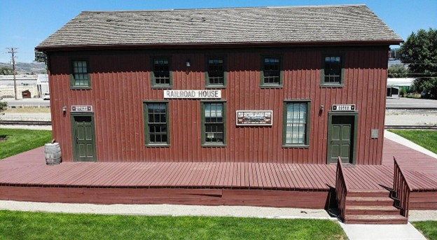
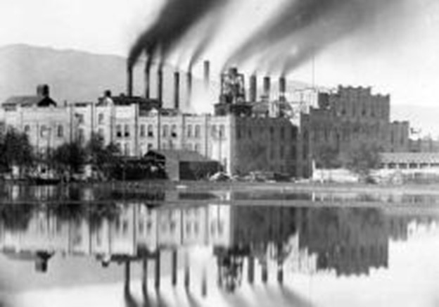
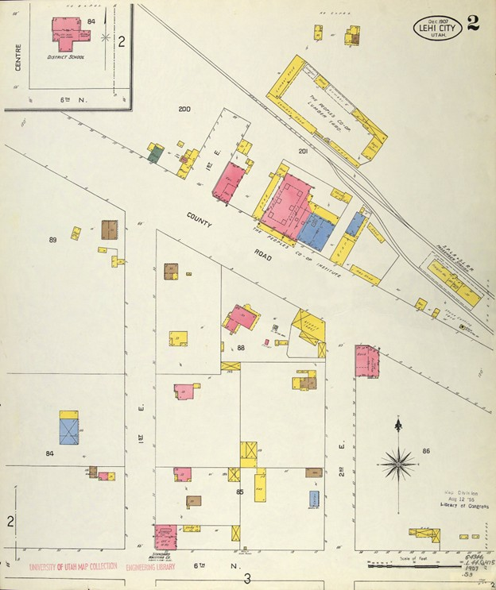
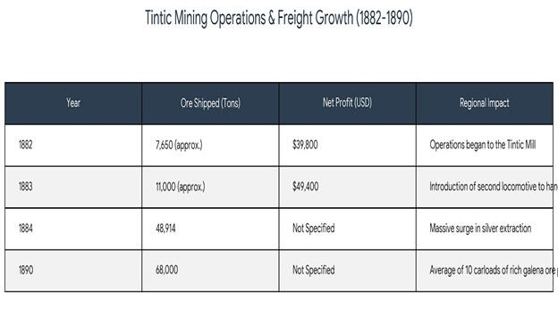
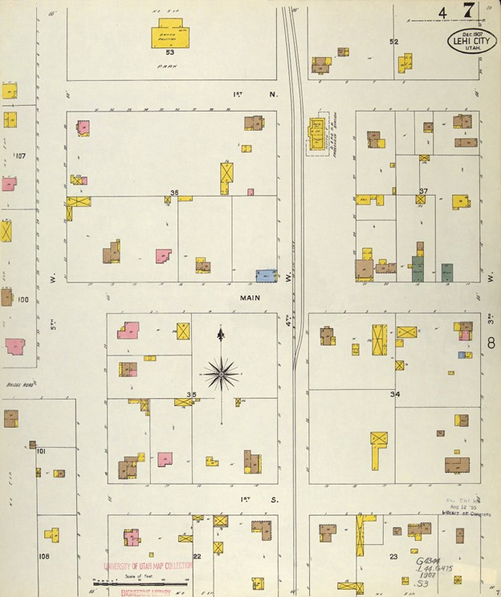

1872
Exhibit 1
Lehi Station Origins
The arrival of the first train on September 27, 1872, and the founding of the Utah Southern Railroad as a faith-driven communal enterprise.
Explore Exhibit 1Tracing the transformative power of railroad infrastructure — from Utah's pioneer frontier to the digital hub of Silicon Slopes.

Originally settled in 1850 by Mormon pioneers as a modest agricultural community known as Dry Creek, Lehi, Utah underwent a radical metamorphosis following the arrival of the Utah Southern Railroad in 1872. This transformation was centered on the emergence of Lehi Junction — a site that served not only as a physical crossroads for iron rails, but as a socio-economic portal through which the industrial age entered the Utah Valley.
The following nine exhibits examine the origins, expansion, and long-term impacts of this rail infrastructure, tracing its evolution from a temporary steam-powered terminus to the contemporary digital hub known as Silicon Slopes.
Each exhibit examines a pivotal chapter in Lehi Junction's history. Click any card to explore the full station-by-station analysis.
The arrival of the first train on September 27, 1872, and the founding of the Utah Southern Railroad as a faith-driven communal enterprise.
Explore Exhibit 1
EconomicHow the railroad transformed Lehi into a commercial hub — and the rise of Thomas R. Cutler, the "Sugar King" of the West.
Explore Exhibit 2
1872 RailsThe American Fork connection, failed proposals, and Lehi Junction as a cultural borderland between Zion and the industrial frontier.
Explore Exhibit 3 1875
1875
The Franklin School, the Common School Movement, and how an expanding railroad community demanded formalized education.
Explore Exhibit 4 1881
1881
The Salt Lake and Western Railroad, the telegraph revolution, and new professional opportunities for women.
Explore Exhibit 5 1884
1884
The 1884 windstorm, the founding of the North Branch LDS congregation, and the emergence of a permanent community.
Explore Exhibit 6
1894The Salt Lake & Mercur Railroad expands the network, turning Lehi Junction into a staggering industrial funnel.
Explore Exhibit 7
1900–1922The Sugar Beet Era, job creation, and enduring landmarks — the Utah Southern Depot and the Lehi Roller Mills.
Explore Exhibit 8 1922–1938
1922–1938
The collapse of the roundhouse, the 1943 station fire, and the national obsolescence of small-town rail depots.
Explore Exhibit 9Mormon pioneers settle "Dry Creek," later Evansville, as a modest agricultural community.
The LDS Church incorporates the Utah Southern Railroad on January 17 to extend rail south from Salt Lake City.
View Exhibit 1 →Hundreds gather to witness the steam locomotive — Lehi's first encounter with the industrial age.
View Exhibit 1 →The Northwest School opens at 500 West & State Street, anchoring a permanent neighborhood.
View Exhibit 4 →The Utah Southern is formally absorbed into the Union Pacific network, ending the pioneer era.
View Exhibit 4 →New line connects Lehi directly to the Tintic Mining District — a targeted industrial transport corridor.
View Exhibit 5 →A powerful windstorm destroys the Salt Lake and Western engine house, proving the Junction's critical role.
View Exhibit 6 →Thomas R. Cutler builds the $400,000 factory — equivalent to $14.5M today — cementing his "Sugar King" legacy.
View Exhibit 2 →Salt Lake & Mercur Railroad links additional mining districts, creating a staggering industrial funnel.
View Exhibit 7 →The Junction's roundhouse collapses after a rail loader strike — a visual symbol of creeping decline.
View Exhibit 9 →The devastating 1943 fire levels the remaining depot infrastructure, severing the community's link to rail.
View Exhibit 9 →Fiber-optic cables replace iron rails as Lehi becomes the digital crossroads of the American West.
Read Conclusion →Scan the QR code below to open The Iron Nexus website on any device — instantly share this historical research with your audience.
Scan to visit IronNexus.com